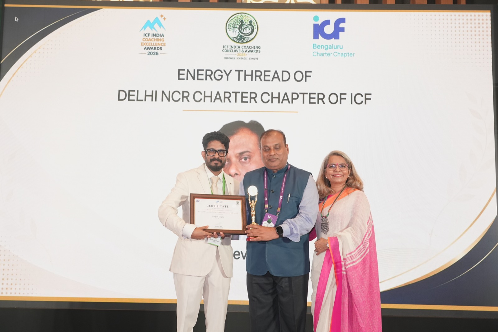
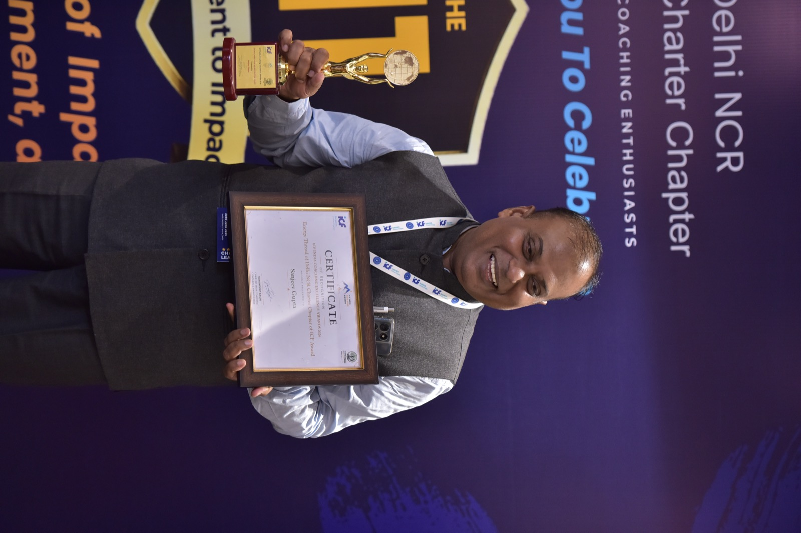
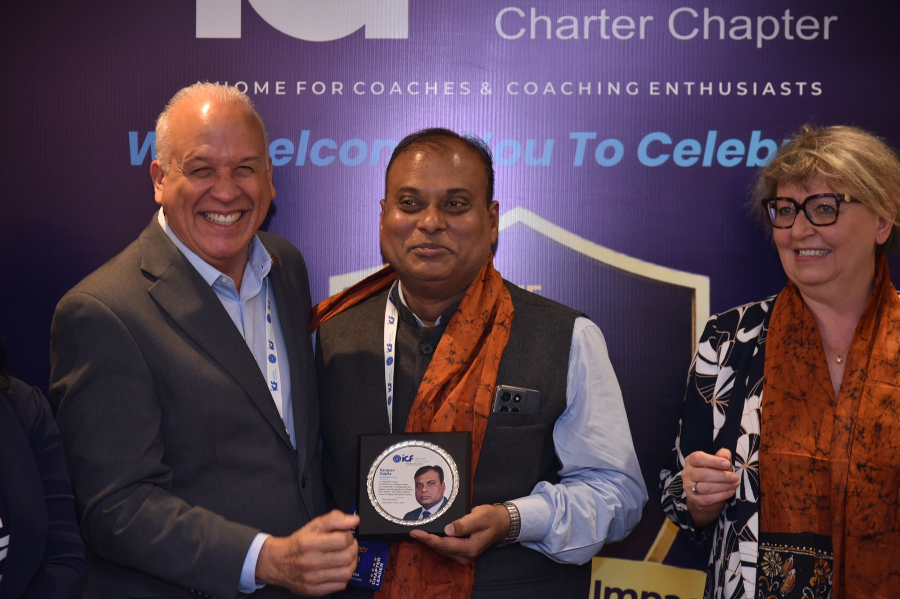

From Leading to Enabling
For more than three decades, I worked in leadership roles across operations, strategy and complex global environments.
My journey involved many of the realities leaders face every day — delivering results, leading large and distributed teams, managing customers and stakeholders, developing people, dealing with cost pressures and navigating organisational change.
These experiences shaped a simple belief: Leadership is not only about what you know. It is about how you lead people, make choices and deliver when situations become complex.
As my responsibilities grew, I learnt that leadership requires a shift: from solving every problem yourself to enabling others to solve them; from giving answers to asking better questions; from managing tasks to building ownership; and from relying mainly on expertise to working through people, relationships and influence.

Addressing the ICF Delhi NCR Chapter — RAGA Coachfest, Feb 2025
Navigating Change Myself
After a long corporate career, I made my own transition from global operations leadership into advisory, consulting and executive coaching.
That journey gave me first-hand experience of questions many senior leaders eventually face: What comes next? What does growth mean now? And how do I use my experience differently in the next phase?
My journey does not give me the answers to someone else's transition. But it helps me understand the questions.
What Shapes My Work Today
Today, I bring together two perspectives: the experience of having led in demanding operating environments, and the curiosity and discipline of an executive coach.
I don't assume that because I have experienced a similar situation, I know the answer to yours. My role is to create a safe space to think, question and explore.
"Experience provides context. Coaching creates space. The choices remain yours."
Industry Honours & Community Recognition
Recognised for contributions to executive coaching, chapter governance and the broader coaching community in India.

Energy Thread of Delhi NCR Charter Chapter
Awarded at the ICF India Coaching Excellence Awards 2026, recognising sustained leadership contribution to the Delhi NCR Charter Chapter.

ICF Delhi NCR Chapter Leadership Recognition
Honored for dedicated volunteer leadership and governance within the ICF Delhi NCR community.

Recognised by ICF Global Leadership Team
Celebrated by the ICF Global Leadership Team at the chapter's 11-year milestone, alongside chapter peers.

Present at the National Coaching Community
At the ICF India Coaching Conclave, Bangalore — themed "Coaching for 2030: Under the Banyan Tree, Conversations Deeper" — participating as both a credentialed coach and a chapter representative at the national level.
Being active within the ICF community means remaining connected to the evolving standards of the coaching profession, and contributing back to the community of practice.